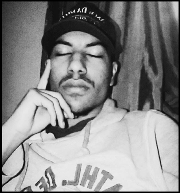
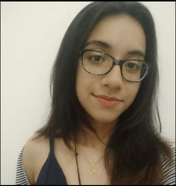

Tudo começou com um jovem desenvolvedor, ainda sonhador, que criou
muitas outras histórias que se desenrolavam e se conectavam
Arthur Itajahy (Arthur Wayne)
20 anos
Fundador do Projeto Thazzar, o idealizador que
implementou a base do projeto.

Quando o início foi feito, Arthur decidiu compartilhar sua idéia com seus
maiores amigos, e aqueles com quem mais tem confiança e afinidade:

Maria Eduarda
20 anos
A pessoa que formou o laço de todos e tornou
possível a nossa trindade.
E...
Nicolas Carvalho
20 anos
Desenvolvedor e criador deste site, envolvido na
idéia primária de criação da história.
E então, Thazzar foi sendo desenvolvida por cada um
individualmente, para que, futuramente, as histórias se combinem
em um mundo definitivo e completo.
 Home
Home